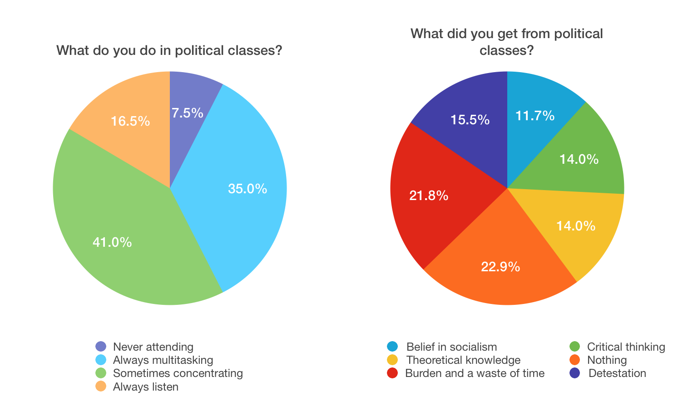
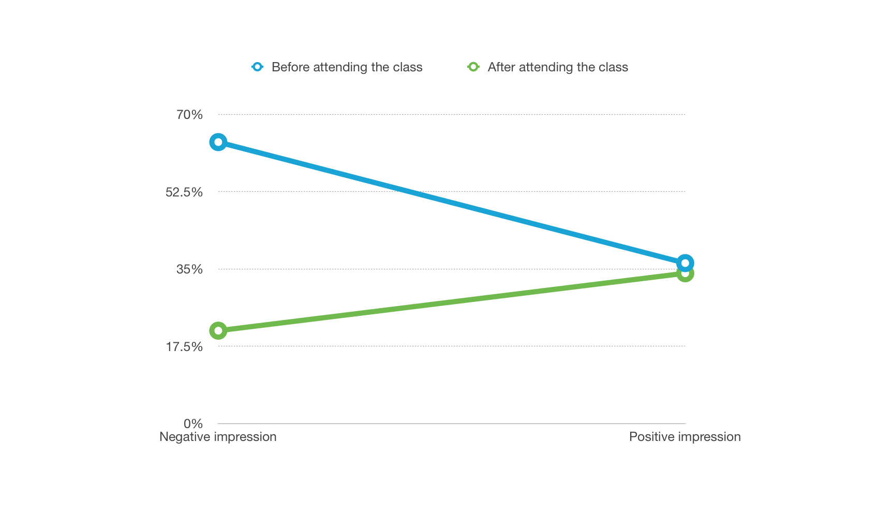
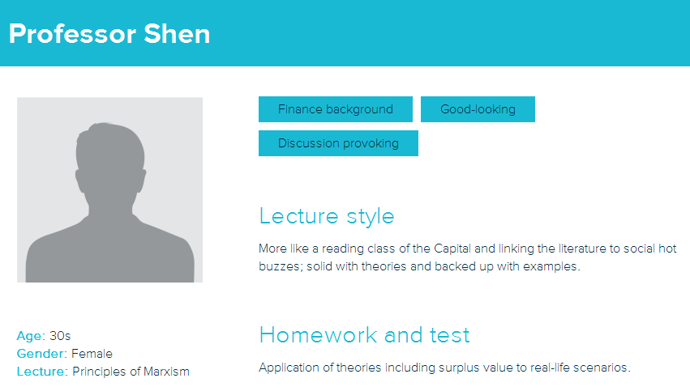

Political class is part of Chinese civic education system. It is a two-year track containing 5 coursed and is mandatory for Chinese students across majors and universities.
In sophomore year, I noticed that many students ditched political classes or multi-tasked in the classroom while I personally found the lectures arresting. I called a group of five to find the causes of this situation. Focusing our research scope to sophomore students in Haidian district, Beijing, we began the project.
We started with a literature review on papers regarding the history and current situation of political classes regarding textbooks, and so on. The topic was never discussed from students’ perspective, thus we focused our research on students.
At first, we interviewed random students on campus to collect fragmentary comments, based on which we designed a questionnaire carefully avoiding bias or indication and sent it via social media to target students. Analyzing and visualizing 200 valid questionnaires, we gained an overall view of how students perceived political classes.

A series of deep interviews with 15 students from 7 different universities from varying academic backgrounds followed, instead of asking questions, we invited them to share their political class experience. Our team managed to identify the neglected problems contributing to the disregard to political classes such as embedded bias from the environment, large class size, and so on.

To find a solution, we did a content analysis of current textbooks and compare it with interesting ones. We also summarized the most popular type of lecturers with personas.

With the essential problems dug out, we wrote a report to articulate the issue and put forward our solutions. We also presented the report to our professor, who loved this exhaustive research and recommended it to a contest in Beijing. Finally, we got the second prize. See our certificate!
If you understand Chinese, you can access the full report here.